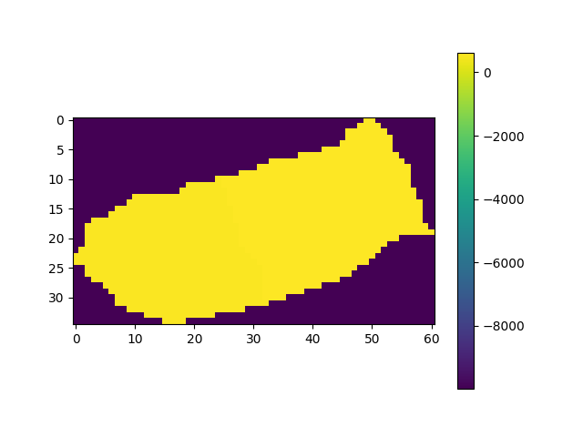

Note
Go to the end to download the full example code.
Mapping atmbc from Earth Observation xarray dataset#
create a CATHY object
create a CATHY mesh from a catchment DEM from a file .adf containing no values -9999
wrap the mesh properties (from hapin file) to an xarray dataset
Estimated time to run the notebook = 5min
# !! run preprocessor change the DEM shape !
# dtm_13 does not have the same shape anymore!
import os
import matplotlib.pyplot as plt
import numpy as np
import pandas as pd
import pyCATHY.meshtools as mt
from pyCATHY import cathy_tools
from pyCATHY.importers import cathy_inputs as in_CT
from pyCATHY.importers import cathy_outputs as out_CT
from pyCATHY.plotters import cathy_plots as cplt
import rioxarray
import pyvista as pv
path2prj = "../EOdata/" # add your local path here
simu = cathy_tools.CATHY(dirName=path2prj,
prj_name="mapping_atmbc_from_EO_dataset"
)
rootpath = os.path.join(simu.workdir + simu.project_name)
# Path to the directory containing the .adf file (not the file itself)
adf_folder = "../../data/dtmplot1/"
# Open the raster (typically named 'hdr.adf', but you only need the folder)
raster_DEM = rioxarray.open_rasterio(adf_folder, masked=True).isel(band=0)
# Create a mask of valid (non-NaN) data
valid_mask = ~np.isnan(raster_DEM)
# Apply the mask to get valid coordinates
valid_x = raster_DEM['x'].where(valid_mask.any(dim='y'), drop=True)
valid_y = raster_DEM['y'].where(valid_mask.any(dim='x'), drop=True)
# Get min and max valid coordinates
min_lon, max_lon = float(valid_x.min()), float(valid_x.max())
min_lat, max_lat = float(valid_y.min()), float(valid_y.max())
raster_DEM_masked = raster_DEM.where(
(raster_DEM['x'] >= min_lon) & (raster_DEM['x'] <= max_lon), drop=True
).where(
(raster_DEM['y'] >= min_lat) & (raster_DEM['y'] <= max_lat), drop=True
)
raster_DEM_masked = np.where(np.isnan(raster_DEM_masked), -9999, raster_DEM_masked)
🏁 Initiate CATHY object
fig, ax = plt.subplots(1)
img = ax.imshow(raster_DEM_masked)
plt.colorbar(img)
simu.update_prepo_inputs(
DEM=raster_DEM_masked,
delta_x=5,
delta_y=5,
ivert=1,
)
fig = plt.figure()
ax = plt.axes(projection="3d")
simu.show_input(prop="dem", ax=ax)
- 

🔄 Update hap.in file
🔄 Update dem_parameters file
🔄 Update dtm_13 file
🔄 update zone file
🔄 Update dem_parameters file
🔄 Update parm file
🔄 Update dem_parameters file
simu.create_mesh_vtk(verbose=True)
🍳 gfortran compilation
👟 Run preprocessor
wbb...
searching the dtm_13.val input file...
assigned nodata value = -9999.0000000000000
number of processed cells = 1174
...wbb completed
rn...
csort I...
...completed
depit...
dem modifications = 0
dem modifications = 0 (total)
...completed
csort II...
...completed
cca...
contour curvature threshold value = 9.99999996E+11
...completed
smean...
mean (min,max) facet slope = 0.216937334 ( 0.012000000, 0.760631317)
...completed
dsf...
weight w_1 less than 1.0E-06: set w_1 = 0 and w_2 = 1
weight w_1 less than 1.0E-06: set w_1 = 0 and w_2 = 1
the drainage direction of the outlet cell ( 2 ) is used
...completed
hg...
...completed
saving the data in the basin_b/basin_i files...
...rn completed
mrbb...
Select the header type:
0) None
1) ESRI ascii file
2) GRASS ascii file
(Ctrl C to exit)
->
Select the nodata value:
(Ctrl C to exit)
->
Select the pointer system:
1) HAP system
2) Arc/Gis system
(Ctrl C to exit)
-> ~~~~~~~~~~~~~~~~~~~~~~~~~~~~~~~~~~~~~~~~~~
dem file
min value = 0.567960E+03
max value = 0.628820E+03
number of cells = 1174
mean value = 0.592434E+03
writing the output file...
~~~~~~~~~~~~~~~~~~~~~~~~~~~~~~~~~~~~~~~~~~
lakes_map file
min value = 0
max value = 0
number of cells = 1174
mean value = 0.000000
writing the output file...
~~~~~~~~~~~~~~~~~~~~~~~~~~~~~~~~~~~~~~~~~~
zone file
min value = 1
max value = 1
number of cells = 1174
mean value = 1.000000
writing the output file...
~~~~~~~~~~~~~~~~~~~~~~~~~~~~~~~~~~~~~~~~~~
dtm_w_1 file
min value = 0.000000E+00
max value = 0.100000E+01
number of cells = 1174
mean value = 0.558963E+00
writing the output file...
~~~~~~~~~~~~~~~~~~~~~~~~~~~~~~~~~~~~~~~~~~
dtm_w_2 file
min value = 0.000000E+00
max value = 0.100000E+01
number of cells = 1174
mean value = 0.441037E+00
writing the output file...
~~~~~~~~~~~~~~~~~~~~~~~~~~~~~~~~~~~~~~~~~~
dtm_p_outflow_1 file
min value = 2
max value = 6
number of cells = 1174
mean value = 2.272573
writing the output file...
~~~~~~~~~~~~~~~~~~~~~~~~~~~~~~~~~~~~~~~~~~
dtm_p_outflow_2 file
min value = 0
max value = 9
number of cells = 1174
mean value = 1.447189
writing the output file...
~~~~~~~~~~~~~~~~~~~~~~~~~~~~~~~~~~~~~~~~~~
A_inflow file
min value = 0.000000000000E+00
max value = 0.293249992721E+05
number of cells = 1174
mean value = 0.770825256348E+03
writing the output file...
~~~~~~~~~~~~~~~~~~~~~~~~~~~~~~~~~~~~~~~~~~
dtm_local_slope_1 file
min value =-0.234000E+00
max value = 0.750000E+00
number of cells = 1174
mean value = 0.189089E+00
writing the output file...
~~~~~~~~~~~~~~~~~~~~~~~~~~~~~~~~~~~~~~~~~~
dtm_local_slope_2 file
min value =-0.189505E+00
max value = 0.692965E+00
number of cells = 1174
mean value = 0.173164E+00
writing the output file...
~~~~~~~~~~~~~~~~~~~~~~~~~~~~~~~~~~~~~~~~~~
dtm_epl_1 file
min value = 0.000000E+00
max value = 0.500000E+01
number of cells = 1174
mean value = 0.469762E+01
writing the output file...
~~~~~~~~~~~~~~~~~~~~~~~~~~~~~~~~~~~~~~~~~~
dtm_epl_2 file
min value = 0.000000E+00
max value = 0.707107E+01
number of cells = 1174
mean value = 0.637239E+01
writing the output file...
~~~~~~~~~~~~~~~~~~~~~~~~~~~~~~~~~~~~~~~~~~
dtm_kSs1_sf_1 file
min value = 0.000000E+00
max value = 0.665000E+02
number of cells = 1174
mean value = 0.288060E+02
writing the output file...
~~~~~~~~~~~~~~~~~~~~~~~~~~~~~~~~~~~~~~~~~~
dtm_kSs1_sf_2 file
min value = 0.000000E+00
max value = 0.665000E+02
number of cells = 1174
mean value = 0.274720E+02
writing the output file...
~~~~~~~~~~~~~~~~~~~~~~~~~~~~~~~~~~~~~~~~~~
dtm_Ws1_sf file
min value = 0.000000E+00
max value = 0.952684E+01
number of cells = 1174
mean value = 0.141419E+01
writing the output file...
~~~~~~~~~~~~~~~~~~~~~~~~~~~~~~~~~~~~~~~~~~
dtm_Ws1_sf_2 file
min value = 0.000000E+00
max value = 0.667605E+01
number of cells = 1174
mean value = 0.126586E+01
writing the output file...
~~~~~~~~~~~~~~~~~~~~~~~~~~~~~~~~~~~~~~~~~~
dtm_b1_sf file
min value = 0.000000E+00
max value = 0.260000E+00
number of cells = 1174
mean value = 0.538160E-01
writing the output file...
~~~~~~~~~~~~~~~~~~~~~~~~~~~~~~~~~~~~~~~~~~
dtm_y1_sf file
min value = 0.000000E+00
max value = 0.000000E+00
number of cells = 1174
mean value = 0.000000E+00
writing the output file...
~~~~~~~~~~~~~~~~~~~~~~~~~~~~~~~~~~~~~~~~~~
dtm_hcID file
min value = 0
max value = 1
number of cells = 1174
mean value = 0.206985
writing the output file...
~~~~~~~~~~~~~~~~~~~~~~~~~~~~~~~~~~~~~~~~~~
dtm_q_output file
min value = 0
max value = 0
number of cells = 1174
mean value = 0.000000
writing the output file...
~~~~~~~~~~~~~~~~~~~~~~~~~~~~~~~~~~~~~~~~~~
dtm_nrc file
min value = 0.100000E+01
max value = 0.100000E+02
number of cells = 1174
mean value = 0.813714E+01
writing the output file...
...mrbb completed
bb2shp...
writing file river_net.shp
Note: The following floating-point exceptions are signalling:
IEEE_UNDERFLOW_FLAG IEEE_DENORMAL
🔄 Update parm file
🛠 Recompile src files [7s]
🍳 gfortran compilation [16s]
❌ Linker error:
/usr/bin/ld: cannot find -llapack: No such file or directory
/usr/bin/ld: cannot find -lblas: No such file or directory
collect2: error: ld returned 1 exit status
👟 Run processor
b''
import xarray as xr
simu.mesh_pv_attributes
# # --- Convert to xarray.Dataset without ETa ---
ds_mesh = xr.Dataset(
coords={
"node": np.arange(20336),
"x": ("node", simu.mesh_pv_attributes.points[:, 0]),
"y": ("node", simu.mesh_pv_attributes.points[:, 1]),
"z": ("node", simu.mesh_pv_attributes.points[:, 2])
},
attrs={
"N_cells": 105660,
# "nodes_per_element": nodes_per_element
}
)
ds_mesh["mask"] = (("y", "x"), raster_DEM_masked)
# ---- 2D structured grid from hapin ----
fig, ax = plt.subplots(figsize=(6, 5))
ax.set_title("Structured 2D grid (hapin)")
ax.set_aspect("equal")
# Plot grid lines
for xval in ds_mesh.x.values:
ax.plot([xval, xval], [ds_mesh.y.values.min(), ds_mesh.y.values.max()], color="lightgrey", lw=0.5)
for yval in ds_mesh.y.values:
ax.plot([ds_mesh.x.values.min(), ds_mesh.x.values.max()], [yval, yval], color="lightgrey", lw=0.5)
ax.set_xlabel("X")
ax.set_ylabel("Y")
plt.show()
ds_mesh["mask"].plot.imshow()
X_nodes = ds_mesh.x.values
Y_nodes = ds_mesh.y.values
Z_nodes = ds_mesh.z.values
# 2D mask from DEM
# mask2d = raster_DEM_masked != -9999 # shape (M, N)
# ds_mesh["mask2d"] = (("y", "x"), mask2d)
# Extract parameters from hapin
dx = simu.hapin["delta_x"]
dy = simu.hapin["delta_y"]
x0 = simu.hapin["xllcorner"]
y0 = simu.hapin["yllcorner"]
# Convert to indices
ix = ((X_nodes - x0) / dx).astype(int)
iy = ((Y_nodes - y0) / dy).astype(int)
# Clip indices inside raster bounds
ix = np.clip(ix, 0, simu.hapin["N"] - 1)
iy = np.clip(iy, 0, simu.hapin["M"] - 1)
# Build boolean mask for nodes
mask_array = ds_mesh["mask"].values # convert to NumPy array
bool_mask_nodes = mask_array[iy, ix] # shape: (node,)
# Add to xarray
ds_mesh["mask_node"] = (("node",), bool_mask_nodes)

import numpy as np
import xarray as xr
# Use simu.hapin
hapin = simu.hapin
# Grid info
N = hapin["N"]
M = hapin["M"]
dx = hapin["delta_x"]
dy = hapin["delta_y"]
x0 = hapin["xllcorner"]
y0 = hapin["yllcorner"]
# Cell centers
x = x0 + (np.arange(N) + 0.5) * dx
y = y0 + (np.arange(M) + 0.5) * dy
# # Create meshgrid for smooth patterns
X, Y = np.meshgrid(x, y)
ETp_2D = 9 + 2.5 * np.sin(np.pi * X / X.max()) * np.cos(np.pi * Y / Y.max())
# Create daily time axis for a full month (30 days)
time = pd.date_range("2026-02-01", periods=30, freq="D")
# Expand 2D arrays to 3D (time, y, x)
ETp_3D = np.tile(ETp_2D[None, :, :], (len(time), 1, 1))
# Create xarray Dataset
ds_et = xr.Dataset(
data_vars={
"ETp": (("time", "y", "x"), ETp_3D),
},
coords={
"time": time,
"x": x,
"y": y,
},
attrs={
"resolution_x": dx,
"resolution_y": dy,
"xllcorner": x0,
"yllcorner": y0,
}
)
ETp_nodes = np.where(ds_mesh['mask_node'], ETp_3D[:, iy, ix], np.nan)
ds_mesh["ETp"] = (("time","node"), ETp_nodes)
ds_mesh["ETp_surfacenodes"] = ds_mesh["ETp"].isel(node=slice(0,int(simu.grid3d['nnod'])))
# a
import matplotlib.pyplot as plt
# Select time step 0
t = 0
# --- Raster ETp from ds_et ---
ETp_raster = ds_et["ETp"].isel(time=t).values
# --- Node ETp from ds_mesh ---
ETp_nodes = ds_mesh["ETp_surfacenodes"].isel(time=t).values
x_nodes = ds_mesh["x"].values[:len(ETp_nodes)]
y_nodes = ds_mesh["y"].values[:len(ETp_nodes)]
# --- Plot side by side ---
fig, axes = plt.subplots(1, 2, figsize=(16,6))
# Raster
im0 = axes[0].imshow(ETp_raster, origin='lower',
extent=[x.min(), x.max(), y.min(), y.max()],
aspect='auto', cmap='viridis')
axes[0].set_title("ETp (raster ds_et)")
axes[0].set_xlabel("x [m]")
axes[0].set_ylabel("y [m]")
fig.colorbar(im0, ax=axes[0], label="ETp [mm/day]")
# Nodes (unstructured mesh)
sc = axes[1].scatter(x_nodes, y_nodes, c=ETp_nodes, cmap='viridis', s=20)
axes[1].set_title("ETp (mesh nodes ds_mesh)")
axes[1].set_xlabel("X [m]")
axes[1].set_ylabel("Y [m]")
axes[1].axis('equal')
fig.colorbar(sc, ax=axes[1], label="ETp [mm/day]")
plt.tight_layout()
plt.show()
# Convert xarray DataArray to NumPy array
ETp_nodes = ds_mesh["ETp_surfacenodes"].values # shape: (time, node)
# Identify columns (nodes) that are all NaN
valid_nodes = ~np.all(np.isnan(ETp_nodes), axis=0) # True for nodes with any valid value
# Keep only valid nodes
ETp_nodes_clean = ETp_nodes[:, valid_nodes]
# Reference time: first time step
t0 = ds_et.time[0].values
# Convert all times to seconds since t0
time_sec = (ds_et.time.values - t0) / np.timedelta64(1, 's') # seconds
# Add as a new coordinate if you want
ds_et = ds_et.assign_coords(time_sec=("time", time_sec))
simu.update_atmbc(HSPATM=0,
IETO=1,
time = ds_et.time_sec,
netValue = -ETp_nodes_clean*0.001 / 86400
)
🔄 Update atmbc
🔄 Update parm file
simu.show_input('atmbc')
simu.update_ic(INDP=4,WTPOSITION=2)
simu.update_parm(TIMPRTi=ds_et.time_sec.values,
VTKF=2
)
simu.run_processor(IPRT1=2,
DTMIN=1e-2,
DTMAX=1e2,
DELTAT=5,
TRAFLAG=0,
verbose=True)
🔄 Update ic
🔄 Update parm file
────────────────────────── ⚠ warning messages above ⚠ ──────────────────────────
['Adjusting NPRT with respect to time of interests requested\n']
────────────────────────────────────────────────────────────────────────────────
🔄 Update parm file
🛠 Recompile src files [43s]
🍳 gfortran compilation [52s]
❌ Linker error:
/usr/bin/ld: cannot find -llapack: No such file or directory
/usr/bin/ld: cannot find -lblas: No such file or directory
collect2: error: ld returned 1 exit status
👟 Run processor
b''
Total running time of the script: (0 minutes 52.803 seconds)